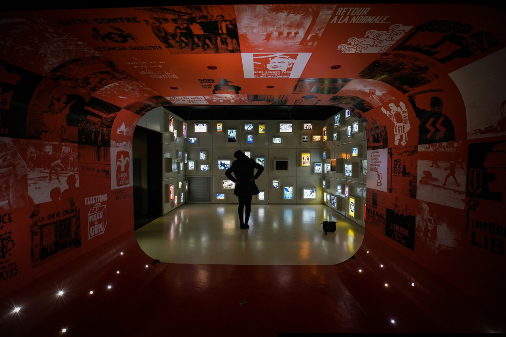
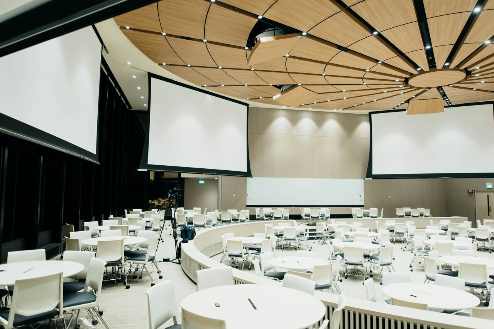
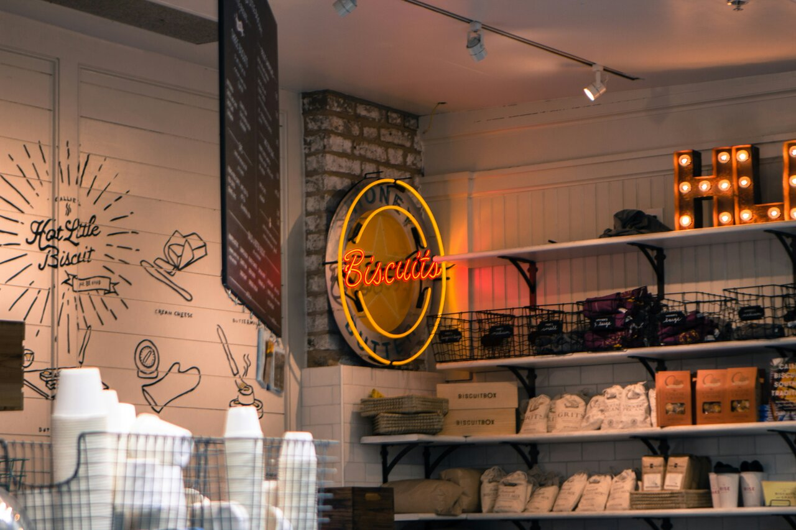

Fotografía de Retrato
La fotografía de retratos es uno de los servicios más solicitados en el ámbito profesional. Este tipo de fotografía se centra en capturar la esencia y personalidad de una persona o grupo. Los fotógrafos especializados en retratos suelen ofrecer:
Sesiones personales:
Ideal para individuos que desean retratos profesionales para redes sociales, currículums o uso personal.Retratos familiares:
Capturan momentos especiales entre familiares, perfectos para álbumes y recuerdos.Fotografía de estudio:
Utilización de fondos y luces profesionales para obtener imágenes de alta calidad.

Fotografía de Eventos
Este servicio es esencial para capturar momentos importantes en eventos como bodas, cumpleaños, conferencias y otros eventos sociales. Nuestro enfoque discreto asegura a detalle la experiencia sin interrumpir. Los fotógrafos de eventos ofrecen:
Cobertura completa:
Documentación desde el inicio hasta el final del evento, para garantizar la máxima calidad y satisfacción del cliente.Álbumes personalizados:
Creación de álbumes fotográficos que narran la historia del evento.Edición profesional:
Mejoramiento de las imágenes para resaltar los momentos clave.

Fotografía Comercial
La fotografía comercial está diseñada para empresas y marcas que buscan promover sus productos o servicios. La manera en que se coloca el producto en la imagen puede influir enormemente en su atractivo visual. Aquí en detalle lo que este servicio incluye:
Fotografía de productos:
Iluminación, fondo y composición para imágenes de alta calidad para catálogos, sitios web y publicidad.Fotografía de moda:
Captura de prendas y accesorios de manera atractiva para campañas publicitarias.Fotografía inmobiliaria:
Presentación visual de propiedades para atraer a potenciales compradores o inquilinos.